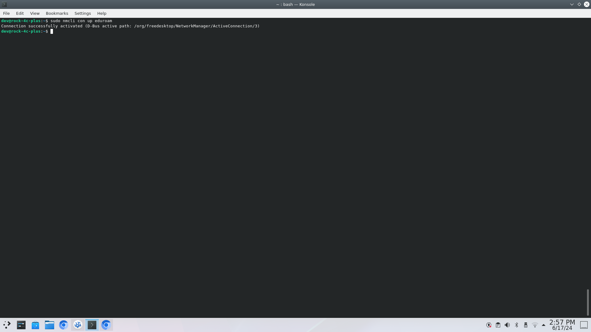

Networking
The Debain OS for the Rock C4+ uses the NetworkManager package to manage all connections to the network interface chips.
-
NetworkManagerdirectory is located here ->/etc/NetworkManager, the contents of which is: -
All of your Wi-Fi profiles are stored in the
system-connectionsfolder, for example: -
Each
...nmconnectionfile has a format and for eduroam, which is an enterprise network it looks like this, you will need to have root level permissions:[connection] id=eduroam uuid=4e3235f7-8387-4102-8a57-dd1120f29ac5 type=wifi interface-name=wlan0 permissions=user:dev:; [wifi] mac-address-blacklist= mode=infrastructure ssid=eduroam [wifi-security] auth-alg=open key-mgmt=wpa-eap [802-1x] anonymous-identity=username@gre.ac.uk eap=ttls; identity=username@greenwich.ac.uk password=YOURPASSWORD phase2-auth=mschapv2 [ipv4] dns-search= method=auto [ipv6] addr-gen-mode=stable-privacy dns-search= method=auto [proxy]
-
Change the anonymous-identity, identity and password to that of the Greenwich account you have been assigned. You can use a CLI text editor like
nano,vim,vietc.Each text editor is slightly different, for easy mode use
nano, if you want to "god-mode" then usevim-
nano:-
You can type straight away
-
At the bottom of the screen you have shortcut keys:
-
if the pattern has a
^then this is the ctrl key -
likewise
Mis the alt key
-
-
When you have navigated and edited the connection credentials, save "Write Out" and "Exit"
-
-
vimandvi:-
You need to enter insert mode by typing
i -
then you can modify the lines
-
once finished press Esc key
-
press : key to enter command mode and then type the following
wq!to write, and quite, forceably.
-
-
-
To make sure you connect to the internet you can do the following actions:

-
You can test the internet connection by typing the following command:
- which should return something like this:
PING 8.8.8.8 (8.8.8.8) 56(84) bytes of data. 64 bytes from 8.8.8.8: icmp_seq=1 ttl=59 time=10.5 ms 64 bytes from 8.8.8.8: icmp_seq=2 ttl=59 time=10.4 ms 64 bytes from 8.8.8.8: icmp_seq=3 ttl=59 time=10.4 ms 64 bytes from 8.8.8.8: icmp_seq=4 ttl=59 time=10.4 ms --- 8.8.8.8 ping statistics --- 4 packets transmitted, 4 received, 0% packet loss, time 3005ms rtt min/avg/max/mdev = 10.350/10.407/10.516/0.064 ms- if so, congrats you are connected, if not we can troubleshoot, just ask.